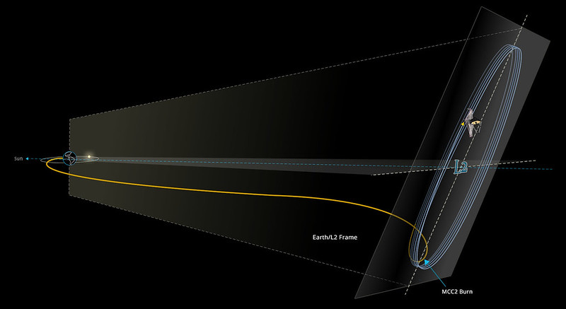

L2 is the point that led me to investigate the James Webb Telescope.
March 2022©
Last Christmas, my children and I were eating brunch with my ex-husband and his family. (Yes, I am friends with my ex and his family!) When we were there, my ex, who has a Master's in math and a dual major in math and physics, began talking about the Lagrange Points. Later that week, I decided to learn about the Lagrange Points. And what I found was music to my soul. I find these points in space to be aesthetically beautiful.
So how does one go from learning about the Lagrange Points to falling in love with the James Webb Telescope? Searching the Web! Going down rabbit holes.
The James Webb telescope which launched on December 25, 2021 is a marvelous scientific endeavor. The planning of the telescope began 30 years ago when the Space Telescope Science Institute (STScI) hadn't even launched the Hubble Telescope.
According to NASA, the James Webb Telescope will focus on four main areas:
One of the features of the James Webb Telescope (JWT) is that it will see into the infra-red range. They had wanted it to be able to also see the ultra-violet range, but that was not possible for this telescope.
One of the most remarkable things about the telescope is not just the telescope itself; it is the position it was sent to in space.
In physics, whenever there are two large gravitational objects in space, there are five beautiful points in space called the Lagrange points. The earth rotating around the sun has five Lagrange points. These points are very special. In fact, it is when I learned about the Lagrange points that I became intrigued with the telescope. A Lagrange point is a gravitationally stable location in space where an object can maintain its position relative to two larger graviational bodies. In Pnysics, they call this the three body problem. These points are labelled, L1 through L5. The James Webb arrived at L2 on January 24, 2022. It traveled at a speed of 720 m / hr, traversing a distance of one million miles, taking one month to arrive at L2. NASA had set up a youtube channel so that people could see how fast it was traveling and its location. It was very fun to watch. L2 is a point that is opposite of the sun near Earth. By being at L2, the telescope will stay in line with the Earth as the Earth orbits the sun. There are also other telescopes at the L2 point.
For further clarification, one can check out the following website. NASA - Lagrange Points
Perhaps the thing I like most about the telescope is that the history of earth's science and mathematics is revealed by the telescope's orbit and the functionality of the telescope. So many things were involved: gravitational physics, optics, material science, fuels engineering, thermal dynamics and more. Scientists at the Goddard Space Center even used the Japanese art of paper-folding, i.e. origami, to fold up parts of the telescope for launching. Who would have guessed. I find this telescope to be one of mankind's great achievements. I eagerly anticipate viewing the images sent back from the telescope after it's mirrors are calibrated. James Webb Telescope - Origami
L2 is the point that led me to investigate the James Webb Telescope.